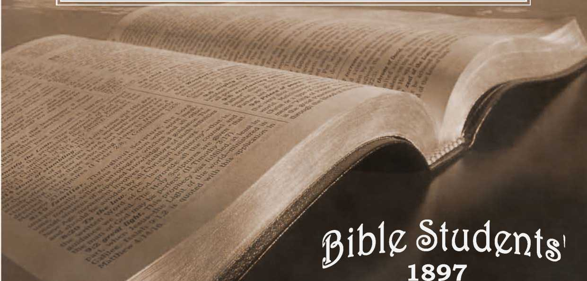

No. 37—“How Readest Thou?”
Ah. jy.—APRIL, i8gg.
Entered as Second-Class Mail Matter at the P. O., Allegheny, Pa.
SAMPLE TRACTS FREE! SUBSCRIPTION PRICE, SIX CENTS PER YEAR-48 PAGES.
—-----■ LUKE IO : 26.--
“ ’Tis one thing, friend, to read the Bible through, Another tiling to read to learn and do;
’Tis one thing, too, to read it with delight
And quite another thing to read it right.
‘ Some read it with design to learn to read, But to the subjeCt pay but little heed; Some read it as their duty once a week, But no instruction from the Bible seek.
“ Some read to bring themselves into repute, By showing others how they can dispute; Whilst others read because their neighbors do, To see how long ’twill take to read it through.
“ Some read the blessed Book, they don’t know why; It somehow happens in the way to lie;
Whilst others read it with uncommon care, But all to find some contradictions there.
“ One reads with father’s specs upon his head, And sees the thing just as his father did ; ■
Another reads through Campbell or through t'cott, And thinks it means exaCtly what l/:cy thought.
“ Some read to prove a preadopted creed, Thus understand but little what they read; And every passage of the book they bend To make it suit that all important end. Some people read, as I have often thought, To teach the Book instead of being taught.”
Write to the address on the other side for a free sample trad.
I I fl
of reading the Bible “with delight” lies in being able to “rightly divide the Word of truth,” “according to the purpose [plan] of the ages which God formed in Christ Jesus our Lord.”—2 Tim. 2:15; Eph. fl 3 : 11; Ileb. 1: 3, Revised Version, margin. 2
to the learning and doing mentioned by the poet, we cannot too highly commend
4 s
fl
*
fl
(VOL. I. OF MILLENNIAL DAWN, WITH CHART OF THE AGES.)
A vindication of the divine character and government: showing, by a recognition and harmonizing of all the Scriptures, that God’s plan, in the permission of evil, past and present, is educational, and preparatory to the ushering of mankind into
THE GOLDEN AGE OF PROPHECY in which all the families of the earth will be blessed with a full knowledge of God, and a full opportunity for attaining everlasting life through the Redeemer, who then will be the great Restorer and Life-giver.—
Afls 3:19-21.
fl
“ It is impossible to read this book without loving the writer and pondering his wonderful solution of the great mysteries that have troubled us all our lives. There is hardly a family to be found that has not lost some loved one who died outside the church—outside the plan of salvation, and, if Calvinism be true, outside of all hope and inside of eternal torment and despair. We smother our feelings and turn away from the horrible picture. We dare not deny the faith of our fathers, and yet can it be possible that the good mother and her wandering child are forever separated? — forever and forever ?
“ I believe it is the rigidity of these teachings that makes atheists and infidels and skeptics—makes Christians unhappy and brings their gray hairs down in sorrow to the grave — a lost child, a lost soul ! * * *
*
fl
s
fl
“ This wonderful book makes no assertions that are not well sustained by the Scriptures. It is built up stone by stone, and upon every stone is the text, and it becomes a pyramid of God’s love, and mercy, and wisdom. There is nothing in the Bible that the author denies or doubts, but there are many texts that he throws a flood of light upon that seems to remove from them the dark and gloomy meaning. I see that editors of leading journals, and many orthodox ministers of different denominations, have endorsed it and have confessed to this new and comforting light that has dawned upon the interpretation of God’s book. Then let every man read and ponder and take comfort, for we are all prisoners of hope. This is an age of advanced thought, and more thinking is done than ever before—men dare think now. Light—more light is the watchword.”
—“ Bill Arp" in Atlanta Constitution.
This book, now in its 560th thousand, is supplied postpaid for 25 cents by the
BIBLE HOUSE, ARCH ST., ALLEGHENY, PA., U. S. A.
Anyone who is interested, and yet too poor to purchase at the above low price, may have a loan of The Plan of the Ages on promise to return the book postpaid within thirty days